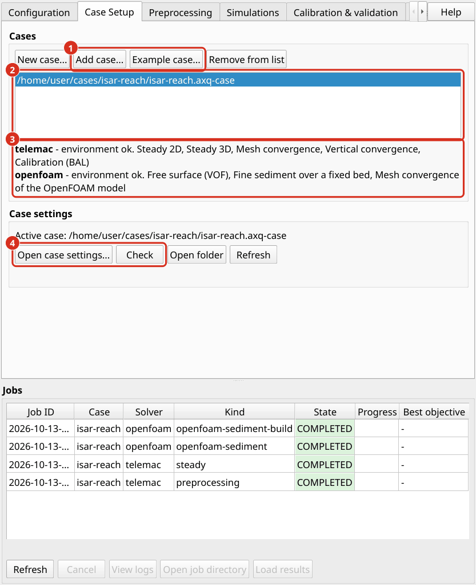
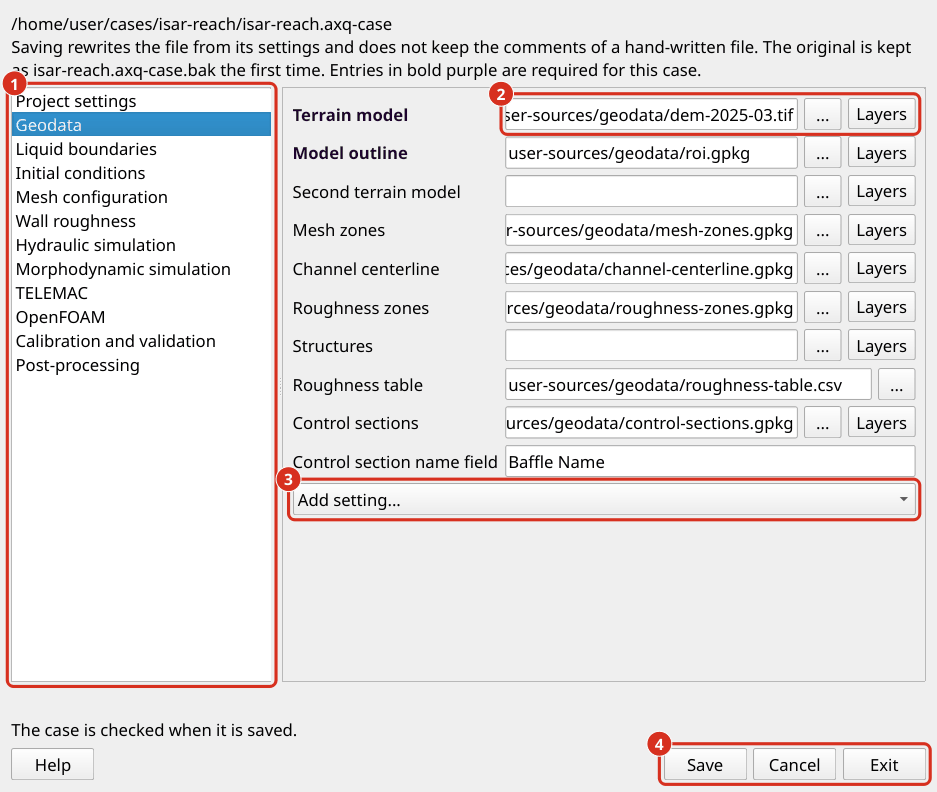
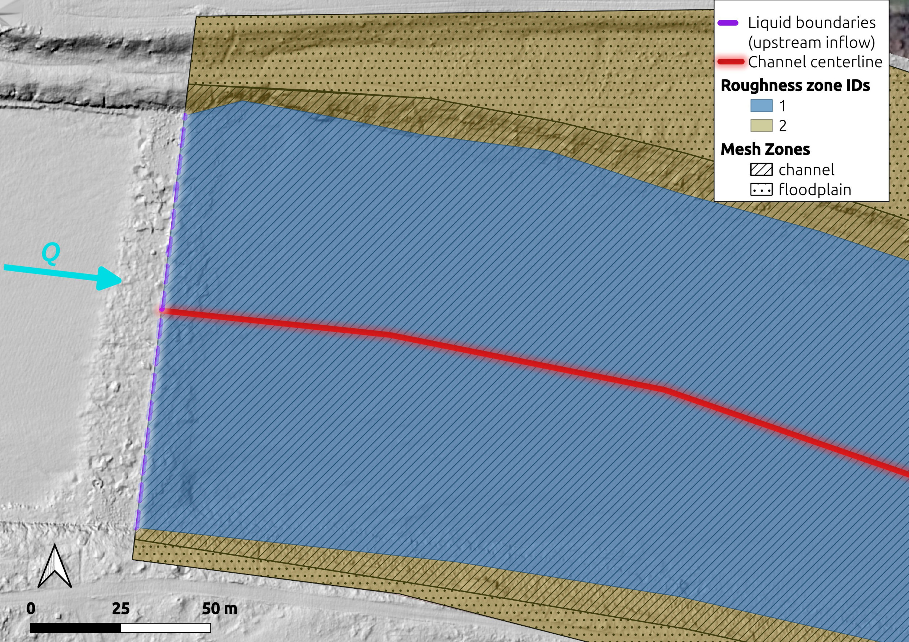

Configuration de aXqua cas
Un aXqua cas est la description complète d’un plan d’eau surface libre pour une tâche de modélisation, comme une rivière tronçon, un lac, un réservoir, ou les environs d’un ouvrage hydraulique : le terrain, les frontières du modèle, la rugosité du lit, les paramètres de la simulation, et les mesures de terrain pour le calage. La description est stockée dans un fichier de cas, dont le nom se termine par .axq-case. Toutes les étapes de simulation lisent ce fichier, de sorte qu’un modèle 2D TELEMAC et un modèle 3D OpenFOAM du même plan d’eau utilisent la même entrée.
Un fichier de cas ne contient rien qui soit spécifique à un ordinateur. Où le logiciel de simulation est installé est stocké dans le profil de l’ordinateur (Profil d’extension). Un dossier cas peut donc être copié sur un autre ordinateur, ou publié avec une étude, et utilisé là sans changement.
Exemple cas. Un cas complet est disponible pour essayer chaque étape avant qu’un cas propre soit mis en place. Il décrit un tronçon tressé de la rivière Isar de 6,6 ha à un débit de 2,4 m3/s, avec un maillage grossier, de sorte que le modèle est construit en une minute et une simulation en régime permanent prend environ deux minutes. L’exemple est un dossier qui contient le fichier de cas, les données d’entrée dans le sous-dossier user-sources/, et un guide (README.md) qui explique chaque étape de la construction au chargement du résultat dans QGIS. Le dossier a une taille d’environ 6 Mo. Son modèle de terrain est découpé dans le contour du modèle, ce qui est tout ce qu’aXqua lit d’un modèle de terrain. L’exemple comprend les mesures de vitesse et de profondeur de deux campagnes sur le terrain à deux débits, afin que le calage et la validation puissent également être essayés.
Sur l’onglet Case Setup, Example case… ouvre une fenêtre qui énumère les exemples disponibles. Sélectionnez le dossier dans lequel le dossier de l’exemple doit être créé et cliquez sur Download. L’exemple est ensuite ajouté à la liste de cas, et l’étape suivante est Build sur l’onglet Preprocessing. Dans un terminal, la commande suivante fait la même chose :
axqua example get --folder <folder>
L’exemple ne fait pas partie du programme installé. Il est téléchargé depuis le dépôt aXqua sur GitHub. Ses données d’entrée peuvent être réutilisées et adaptées à n’importe quelle fin, à condition que aXqua soit cité (Creative Commons Attribution 4.0 International License). Le fichier LICENSE.md dans le dossier de l’exemple indique les termes et la citation. Un dossier avec le nom de l’exemple qui existe déjà n’est jamais écrasé, car il peut contenir des résultats. Supprimer le dossier, ou sélectionner un autre, pour télécharger l’exemple à nouveau.
Dans le prolongement. L’onglet Case Setup a deux boîtes. La boîte Cases liste le cas que l’extension connaît. New case… crée un fichier de cas et ouvre ses paramètres, Add case… ajoute un fichier de cas existant, Example case… télécharge l’exemple, et Remove from list retire le cas actif de la liste sans supprimer son fichier. Le cas sélectionné est le cas actif auquel tous les autres onglets se réfèrent. L’extension se souvient de la liste lorsque QGIS est fermé ; il n’y a pas de fichier de projet distinct, car un cas est le projet. Un fichier de projet d’une version antérieure (.axqua-prj) peut encore être sélectionné avec Add case…, ce qui ajoute le cas qu’il énumère.
La boîte Case settings montre le fichier du cas actif. Open case settings… ouvre les paramètres du cas actif dans une fenêtre de leur propre, et Check examine le cas sans ouvrir la fenêtre. La fenêtre affiche les paramètres sur les pages, qui sont listés à gauche dans l’ordre des sous-sections ci-dessous : Project settings, Geodata, Liquid boundaries, Initial conditions, Mesh configuration, Wall roughness, Hydraulic simulation, Morphodynamic simulation, TELEMAC, OpenFOAM, Calibration and validation, et Post-processing. Une page peut contenir plusieurs cadres : l’échange avec un corps poreux est un cadre de la page Liquid boundaries, le séchage des films minces un cadre de Initial conditions, le réseau du modèle OpenFOAM un cadre de Mesh configuration, et les structures et les surfaces de CAD sont des cadres de OpenFOAM. Sur chaque page, la fenêtre affiche les paramètres dont chaque cas a besoin et tous les paramètres que le fichier de cas contient déjà. Tous les autres réglages d’un cadre sont ajoutés avec Add setting…. Un tooltip explique chaque réglage, et un cadre dont le but n’est pas évident a une information bouton.
Les paramètres requis sont écrits en gras violet foncé, la couleur de l’icône aXqua. Pour un cas minimal, ce sont le nom et le système de coordonnées de référence, le modèle de terrain, le contour du modèle, les lignes d’entrée et de sortie et le débit, plus la sortie niveau d’eau alors que l’état de sortie est un niveau fixe. Une option qui est activée ajoute les réglages dont elle a besoin : une simulation en régime transitoire nécessite l’hydrographe, le transport des sédiments avec GAIA les classes de sédiments, les sédiments fins sur un lit fixe la taille des grains et la concentration à l’entrée, et le MNT de différence le modèle du second terrain. Les pages TELEMAC, OpenFOAM et Calibration and validation commencent par un commutateur (Simulate with TELEMAC, Simulate with OpenFOAM, Calibrate and validate this case). Un interrupteur qui est éteint laisse le bloc hors du fichier de cas et grise ses paramètres, aussi où ils sont affichés sur une autre page. Allumé, ses réglages requis deviennent violet aussi bien. Une page dont le réglage requis est toujours vide est marquée dans la liste de gauche, et l’enregistrement indique chaque réglage requis vide.


L’onglet Case Setup. (1) Add case… et Example case…. (2) Le cas que l’extension connaît. Le cas sélectionné est le cas actif auquel tous les autres onglets se réfèrent. (3) Ce que le cas actif peut faire avec le logiciel de simulation de cet ordinateur. (4) Open case settings… ouvre les paramètres du cas actif, et Check examine le cas.
Rien ne doit être tapé qui puisse être sélectionné. Chaque fichier a un bouton qui ouvre une boîte de dialogue de fichiers, et le bouton Layers offre les couches qui sont ouverts dans QGIS. Un fichier dans ou près du dossier cas est entré avec un chemin relatif au fichier de cas, de sorte que le cas peut être déplacé avec ses données.


Les paramètres cas avec la page Geodata. (1) Les pages des paramètres cas ; les paramètres requis sont gras violet foncé. (2) Un fichier est sélectionné avec le bouton ... ou, avec Layers, des couches qui sont ouverts dans QGIS. (3) Add setting… ajoute un réglage du bloc qui n’est pas encore montré. (4) Save, Cancel et Exit.
La fenêtre a trois boutons en bas à droite. Save écrit le fichier de cas et le vérifie, et la fenêtre reste ouverte. Cancel rejette les modifications depuis la dernière sauvegarde et ferme la fenêtre. Exit ferme la fenêtre et demande d’abord s’il y a des changements qui n’ont pas été enregistrés. La vérification n’empêche jamais l’enregistrement, car un cas est incomplet pendant sa configuration. Il marque chaque réglage qui n’est pas en ordre avec un triangle, orange pour un avertissement et rouge foncé pour une erreur, et marque la page dans la liste à gauche. Un clic sur un triangle ouvre le message avec son remède (Messages d’avertissement, Messages d’erreur). Le bouton Check sur l’onglet Case Setup effectue la même vérification sans ouvrir la fenêtre. Help en bas à gauche ouvre la section de cette documentation qui appartient à la page qui apparaît.
L’enregistrement depuis la fenêtre réécrit le fichier de cas depuis ses paramètres. Les commentaires d’un fichier de cas qui a été écrit à la main ne sont pas conservés. L’original est conservé comme <name>.bak la première fois que la fenêtre économise.
Dans un éditeur de texte. Le fichier de cas est un fichier texte au format YAML. Chaque bloc du fichier est expliqué dans une sous-section ci-dessous. Un modèle commenté est fourni dans le dossier cases/case-template/ du dépôt. Copiez ce dossier pour lancer un nouveau cas, et renommez le fichier de cas. La commande axqua check <case-file> rapporte tout ce qui n’est pas en ordre.
Fichiers de cas des versions précédentes aXqua sont nommées case-config.yml et peuvent contenir l’emplacement du logiciel de simulation. Ils sont encore lus. La commande suivante écrit un fichier de cas du type actuel à côté d’un tel fichier :
axqua migrate case-config.yml --to-case
Le nouveau fichier est nommé d’après le dossier du cas. La commande ne remplace pas un fichier de cas de ce nom qui existe déjà, car il peut avoir été édité depuis qu’il a été écrit. Pour le remplacer, nommez-le par -o <file>. Appliquée à un fichier qui est déjà un fichier de cas du type courant, la commande réécrit ce fichier et conserve la version précédente comme <name>.bak.
Un fichier de cas minimal semble comme suit :
project:
name: my-reach
crs_epsg: 25832
telemac:
solver: telemac2d
n_processors: 4
geodata:
dem_initial: user-sources/geodata/dem.tif
boundary: user-sources/geodata/roi.gpkg
boundaries:
liquid_boundaries: user-sources/geodata/liquid-boundaries.gpkg
prescribed_flowrate: 47.2 # discharge at the inflow [m3/s]
outflow_condition: elevation
prescribed_elevation: 379.5 # water surface elevation at the outflow [m]
Paramètres du projet
Le bloc project nomme le cas, définit son système de coordonnées de référence et indique où aXqua écrit ses fichiers.
project:
name: my-reach
crs_epsg: 25832 # metric coordinate reference system (here: ETRS89 / UTM 32N)
sim_dir: axqua-case # folder for everything that aXqua produces
Un cas dossier a deux parties avec des rôles différents. Le dossier user-sources/ contient les données d’entrée, comme les modèles de terrain, les couches vectorielles et les mesures. aXqua lit ces fichiers et ne les modifie jamais. Le dossier axqua-case/ reçoit tout ce qu’aXqua produit, dans un sous-dossier par étape de workflow :
my-reach/
my-reach.axq-case the case file
user-sources/ input data (read only)
axqua-case/
preprocessing/ clipped terrain models, compiled measurements
simulation/ the TELEMAC model and its results
openfoam/ the OpenFOAM model and its results
openfoam-sediment/ the fine sediment simulation and its results
postprocessing/ mesh convergence studies, figures
calibration-validation/ input and output of the calibration
En raison de cette séparation, un cas peut être reconstruit à partir de ses entrées à tout moment, et le dossier axqua-case/ peut être supprimé sans perdre des données qui ne peuvent pas être reproduites.
Tous les chemins du fichier de cas sont interprétés par rapport au dossier du fichier de cas. crs_epsg doit être une mesure (prévue) système de coordonnées de référence. Input couches peut utiliser tout autre système de référence, car aXqua les convertit quand il les lit.
Géodonnées
Le bloc geodata liste le modèle de terrain et les couches vectorielles qui décrivent le tronçon. Les noms des fichiers sont gratuits. Ce qui compte, c’est le type de géométrie et les champs d’attribut de chaque couche.
Entrée |
Géométrie |
Champs d’attribut |
Objet |
|---|---|---|---|
|
Détruire |
aucune |
Modèle numérique de terrain (MNT) du lit de la rivière et des lits majeurs. |
|
un polygone |
aucune |
Zone d’étude. Le modèle couvre la zone intérieure de ce polygone. |
|
polygones |
|
Zones d’égale résolution du maillage. Le nom de la zone doit contenir |
|
une ligne |
aucune |
Le cours des cellules chenal principal. Maillage dans les cellules chenal sont étirés le long de cette ligne. |
|
polygones |
|
Zones de rugosité égale (Rugosité des parois). |
|
Tableau (CSV) |
|
Valeur de la rugosité de chaque zone. |
|
polygones ou lignes |
|
Les barrages, les barrages, les murs et les bâtiments que le MNT ne contient pas. |
|
lignes |
un champ de nom |
Profils en travers où le débit est évalué après une simulation. |
|
Détruire |
aucune |
MNT d’une enquête ultérieure, pour les simulations morphodynamiques (Simulation morphodynamique). |
Les lignes d’entrée et de sortie sont également un vecteur couche, qui appartient aux frontières (Frontières liquides).
Les couches vectorielles doivent s’intégrer : les zones de maillage couvrent la zone d’étude sans failles, les lignes d’entrée et de sortie se trouvent sur son contour, et l’axe du chenal court à l’intérieur de la zone chenal. Dessinez les Couchs en QGIS sur un hillshade du MNT, qui montre clairement les berges, les barres de gravier et les structures (Processing Toolbox > GDAL > Raster analysis > Hillshade).


Zones de maillage, zones de rugosité, la ligne d’entrée et le chenal axe du chenal à l’extrémité amont d’un modèle, dessinés sur un ombrage du MNT.
Pour placer une petite zone de raffinement dans une zone plus grande, couper un trou de la même forme dans le polygone plus grand avec l’outil QGIS Add Ring (Advanced Digitizing Toolbar), de sorte que les deux polygones ne se chevauchent pas.
Les structures sont dessinées comme des caractéristiques ordinaires. Une ligne avec un Width (m) décrit un mur ou la crête d’un barrage. Un polygone décrit un bâtiment ou une jetée. Crest (m) donne une crête horizontale à une altitude absolue, et Height (m) donne une crête à une hauteur constante au-dessus du sol. Les structures que l’eau peut traverser (dam, étang, remblai) élèvent le lit de la rivière à la crête. Les structures qui ne sont jamais surmontées (mur, bâtiment, jetée) sont retirées de la zone d’écoulement. La distinction est faite à partir du texte dans le champ Type.
Pour une simulation morphodynamique, aXqua peut calculer le changement d’altitude entre deux relevés lui-même à partir de dem_initial et dem_target (Simulation morphodynamique).
Structures conçues à partir de dessins CAO. Une structure qui existe comme un dessin de construction et non comme un relevé, comme un passe de poisson ou un flume, peut être fournie comme un ensemble de fichiers STL. Le bloc surfaces nomme chaque fichier et indique son rôle. aXqua convertit les fichiers en entrées ordinaires d’un cas (un MNT, la zone d’étude, les lignes d’entrée et de sortie, les structures et les zones de rugosité), de sorte qu’aucune entrée n’est requise sous geodata pour eux.
surfaces:
resolution: 0.05 # [m] cell size of the DEM that is created
scale: 0.001 # the drawing is in millimeters
parts:
- {file: user-sources/cad/bed.stl, role: bed, zone_id: 1, ks: 0.08}
- {file: user-sources/cad/walls.stl, role: wall}
- {file: user-sources/cad/inlet.stl, role: inflow}
- {file: user-sources/cad/outlet.stl, role: outflow}
Les rôles sont : bed (terre, au moins un fichier), wall (structures qui ne sont jamais dépassées), inflow et outflow (ouverture frontières), roi (ligne du modèle) et ignore. Un fichier bed avec un zone_id et une valeur ks définit également une zone de rugosité. La commande axqua surface <case-file> effectue la conversion seule, de sorte que le résultat peut être inspecté dans QGIS avant que le modèle soit construit. Parce qu’un MNT stocke une élévation par emplacement, des parties surplombant un dessin ne peuvent pas être représentées. aXqua rapporte leur part. Sélectionnez le resolution assez bien pour le mur le plus mince de la structure.
Frontières liquides
Aux frontières liquides du modèle, l’utilisateur indique où l’eau entre et sort et combien. Pour l’écoulement subcritique qui prévaut dans la plupart des rivières et dans les entrées et sorties des lacs et des réservoirs, le modèle exige le débit à l’écoulement et le cote de la surface libre à l’écoulement. Le débit détermine la quantité d’eau qui entre. Le niveau d’eau en aval détermine à quelle profondeur et à quelle vitesse l’eau quitte le modèle.
boundaries:
liquid_boundaries: user-sources/geodata/liquid-boundaries.gpkg
prescribed_flowrate: 47.2 # [m3/s]
outflow_condition: elevation # elevation | stage_discharge | free
prescribed_elevation: 379.5 # [m]
liquid_boundaries est une couche de lignes avec une ligne par afflux et par sortie profil en travers. Un champ d’attribut nommé Type (inflow/outflow) contient le mot inflow ou outflow pour chaque ligne. Toutes les parties du contour du modèle qui ne sont pas couvertes par une telle ligne sont parois fermées.
outflow_condition sélectionne comment le niveau d’eau en aval est défini :
elevation(par défaut)Une cote de la surface libre constante, donnée par
prescribed_elevation.stage_dischargeLa cote de la surface libre est lue d’une courbe de tarage pour le débit simulé. La courbe est une table avec les colonnes
QetWSE, nommé parstage_discharge. Si aucune courbe mesurée n’est disponible, aXqua en estime une à partir de la largeur du chenal, de la pente du lit et de la rugosité à la ligne de sortie.freeAucun niveau d’eau n’est prescrit. Ce choix est adapté pour une sortie sur une goutte ou un déversoir.
Pour une simulation avec un débit qui varie dans le temps, inflow nomme une table avec une colonne de temps et une colonne débit, et hydrodynamics.regime est réglé à unsteady; les paramètres cas marquent alors l’hydrographe au besoin. L’échange avec un corps poreux, dans lequel l’eau quitte la surface à travers une barre de gravier et retourne plus loin en aval (TELEMAC choix), est un cadre de la page Liquid boundaries dans les paramètres cas.
Station hydrométrique données. Le script scripts/gauge_data.py récupère les séries chronologiques débit et courbes de tarage de River stations hydrométriques et les sauve dans le format qu’aXqua lit. Il soutient les stations hydrométriques du Service bavarois d’information sur les inondations (HND) et de l’USGS. Il s’ouvre dans un navigateur Web et nécessite le paquet streamlit (pip install ".[gui]"). Commencez à partir du dossier du dépôt, collez l’adresse ou le numéro d’une station hydrométrique, et enregistrez les deux tables dans user-sources/:
python scripts/gauge_data.py
La série débit exportée est la table inflow, et la courbe de tarage exportée est la table stage_discharge. Entrez l’altitude de la station hydrométrique zéro pour convertir la station hydrométrique en une cote de la surface libre absolue, et vérifiez que cette altitude et le MNT se réfèrent au même système de hauteur.
Conditions initiales
Une simulation nécessite un état à partir duquel elle commence. Le bloc initialization offre deux choix.
Démarrage à sec (par défaut). Le lit de la rivière est sèche, sauf pour une courte étirement à l’entrée qui est remplie d’eau à la profondeur dry_start_depth (par défaut 0,5 m). Le débit entrant remplit ensuite le tronçon en amont. Ce départ ne nécessite aucune hypothèse sur le niveau d’eau, mais le modèle doit simuler le remplissage du tronçon.
Préhumide chenal. Quand prewet_depth est réglé, les zones chenal commencent par l’eau. aXqua estime le niveau d’eau à profils en travers le long de l’axe du chenal pour le débit du cas et remplit le chenal à 70 % de ce niveau (prewet_fill). Le remplissage inférieur est prévu : un chenal avec trop peu d’eau se remplit en quelques secondes, alors que l’eau excédentaire sur sol plat peut rester comme un mince film jusqu’à la fin de la simulation, car un modèle 2D n’a ni infiltration ni évaporation. L’étude de convergence en maillage utilise le début préhumide pour économiser du temps de calcul.
initialization:
dry_start_depth: 0.5 # [m] water depth of the filled stretch at the inflow
# prewet_depth: 0.5 # [m] activates the pre-wetted start
Passer des films minces. Sur un lit grossier, l’eau qui est plus mince que le grain rugosité ne coule pas sur le lit : elle se trouve dans les grains et, dans la nature, s’écoule dans le sol. Un modèle 2D n’a pas de sol sous le lit, donc un tel film reste là où il est et rend la zone mouillée beaucoup plus grande qu’il est. Sur le cas d’Isar, l’eau moins profonde que 1 cm couvrait 13 % de la surface mouillée et contenait 0,16 % de l’eau. Avec drying.film_infiltration: true, aXqua enlève l’eau qui est à la fois plus faible que film_depth (par défaut 0,01 m) et plus lente que film_velocity (par défaut 0,005 m/s), et la retourne là où le corps poreux rend l’eau, de sorte qu’aucune eau ne soit perdue. L’option nécessite donc l’échange avec un corps poreux (gain_lose). Dans les paramètres cas, c’est le cadre Drying of thin films de la page Initial conditions, dont l’information bouton l’explique.
Maillage configuration
Le maillage computationnel divise la zone d’étude en triangles. Les petits triangles résolvent le flux plus en détail mais augmentent fortement le temps de calcul. aXqua utilise donc des résolutions différentes dans différentes zones :
channelles zones reçoivent des triangles qui sont étirés le long de l’axe du chenal, parce que le débit varie moins le long du chenal qu’à travers lui ;floodplainles zones reçoivent de plus grands triangles de forme régulière ;refinementles zones reçoivent de petits triangles de forme régulière, par exemple autour d’une structure.
La longueur des bords de chaque zone est lue à partir du champ Max Edge Length (m) de la zone de maillage couche, de sorte que la résolution est définie dans QGIS. Le bloc mesh fournit les valeurs qui s’appliquent lorsque ce champ est vide :
mesh:
channel_size: 0.5 # [m] edge length across the channel
floodplain_size: 1.5 # [m]
refinement_size: 0.5 # [m]
channel_anisotropy: 4.0 # ratio of the edge length along and across the channel
growth_ratio: 1.2 # largest size ratio of neighboring triangles
Les valeurs par défaut produisent une fine maillage. Un tronçon de 0,3 km2 puis a plusieurs centaines de milliers de triangles. Utilisez des longueurs de bord plus grandes tandis que frontières et rugosité sont encore en cours de vérification, et affiner ensuite. L’étude de convergence en maillage détermine quelle résolution est suffisante (Convergence en maillage).
Sans zones de maillage et axe du chenal, aXqua crée un maillage de résolution uniforme (default_size).
OpenFOAM treillis. Le modèle OpenFOAM est construit sur un réseau de colonnes en plan avec couches dans la verticale (Choix OpenFOAM). Sa résolution est définie sur la même page des paramètres cas, dans le cadre OpenFOAM lattice. Avec openfoam.cell_size_factor, la taille de maille du treillis suit la longueur de bord dans le chenal : 3 rend le treillis trois fois plus grossier que le TELEMAC maillage, de sorte qu’un changement du TELEMAC maillage se prolonge. Sans le facteur, openfoam.cell_size est utilisé tel quel. openfoam.n_layers est le nombre de couches dans la verticale.
Rugosité des parois
L’eau qui coule connaît des forces de friction au lit de la rivière et sur les rives. Ces forces dépendent de la rugosité des surfaces mouillées, et elles déterminent la hauteur d’eau pour un débit donné. La rugosité est donc le paramètre le plus important d’un modèle hydraulique, et c’est le paramètre habituellement étalonné.
aXqua décrit rugosité par la rugosité équivalente de sable \(k_s\) (en mètres) après Nikuradse, qui est une longueur de l’ordre des grains grossiers du lit. Chaque polygone de la couche roughness_zones porte un entier Zone ID, et le tableau roughness_table attribue une valeur \(k_s\) à chaque ID :
zone_id,ks
1,0.2
2,0.5
Dans cet exemple, la zone 1 est le lit de gravier de la chenal et la zone 2 est une végétation lit majeur. Le bloc friction contient le rugosité de la parois fermées à la contour du modèle et les valeurs qui s’appliquent sans zones de rugosité:
friction:
roughness_law: 5 # 5 = Nikuradse (ks), 4 = Manning (n), 3 = Strickler
boundary_law: 3
boundary_coefficient: 38.0
Les valeurs \(k_s\) des zones sont des valeurs de départ. Le calage les ajuste dans les limites fixées par l’utilisateur (Calage et validation).
Simulation hydraulique
Le bloc hydrodynamics contrôle la simulation hydraulique avec TELEMAC. La plupart des entrées ont des valeurs par défaut qui sont adaptées aux plans d’eau avec des zones sèches et humides. Les entrées qu’un utilisateur définit habituellement sont :
hydrodynamics:
duration: 7200 # [s] simulated time
turbulence_model: auto # auto, or the number of a TELEMAC turbulence model
flux_tolerance: 1.0e-3 # accepted relative difference of inflow and outflow
duration doit être assez longue pour que le tronçon se remplisse et que le flux devienne stable. Un régime permanent est atteint lorsque le même débit quitte le modèle qui l’entre. aXqua évalue cet équilibre après chaque course et compare la différence relative avec flux_tolerance. La valeur par défaut de 0,1 % est bien inférieure à l’incertitude d’une mesure débit.
Avec turbulence_model: auto, aXqua sélectionne le modèle de turbulence de la résolution du maillage par rapport à la hauteur d’eau. Le pas de temps est adapté automatiquement pendant la course, de sorte que la simulation reste stable (desired_courant).
Le nombre de cœurs de processeur est une propriété de l’ordinateur et est défini dans son profil (mpi_processes, Définir les liaisons solveur). Lorsque le profil ne donne aucun numéro, telemac.n_processors du fichier de cas s’applique. Les paramètres de la simulation 3D avec OpenFOAM sont décrits dans Choix OpenFOAM.
Simulation morphodynamique
Une simulation morphodynamique calcule le transport des sédiments et le changement résultant du lit (Simulations morphodynamiques). La page Morphodynamic simulation des paramètres cas comporte trois cadres : le transport des sédiments avec TELEMAC et GAIA (le bloc morphodynamics), les sédiments fins sur un lit fixe avec OpenFOAM (fine_sediment, Configuration OpenFOAM), et le MNT de différence (dem_of_difference). Le transport des sédiments avec GAIA est activé dans le bloc morphodynamics, qui décrit les sédiments :
morphodynamics:
enabled: true
bedload: true
suspended_load: false
sediment_classes: # one entry per grain size class
- {diameter: 0.0008, density: 2650, shields: 0.047}
- {diameter: 0.004, density: 2650, shields: 0.047}
active_layer_thickness: 0.1 # [m]
Chaque classe de sédiments est définie par son diamètre de grain (en mètres), sa densité et son paramètre critique Shields, qui est la contrainte de cisaillement sans dimension à laquelle les grains commencent à se déplacer.
Le changement mesuré de lit de la rivière sert de référence pour le calage d’un modèle morphodynamique. C’est la différence de deux relevés de terrain, qui est appelé un MNT de différence (DoD). Avec le bloc suivant, aXqua calcule le DoD de geodata.dem_target et geodata.dem_initial:
dem_of_difference:
enabled: true
uncertainty_initial: 0.10 # [m] vertical accuracy of the first survey
uncertainty_target: 0.05 # [m] vertical accuracy of the second survey
confidence_level: 0.95
Les changements d’élévation moins importants que l’incertitude combinée des deux enquêtes ne peuvent être distingués de l’erreur de mesure. aXqua les enlève du DoD. La limite est appelée le niveau de détection et les résultats des deux valeurs de précision et le niveau de confiance. Sinon, min_lod fixe la limite directement.
Lorsque le lit de la rivière reste en place et que son contenu de sédiments fins change, la simulation est définie dans le bloc fine_sediment. Il nomme la taille des grains des sédiments fins et sa concentration dans l’eau qui entre dans le modèle :
fine_sediment:
enabled: true
grain_size: 0.00003 # [m]
inflow_concentration: 0.02 # [kg/m3]
pick_up: off
Cette simulation est calculée avec OpenFOAM. Toutes les entrées du bloc sont expliquées à Configuration OpenFOAM.